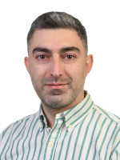

People
Our multidisciplinary team combines expertise in imaging, materials science, engineering, data processing, and quantitative analysis.

Miha Hren
Miha is a ...

Lucia Mancini
Lucia is ....

Lidija Korat
Lidija is a ...

Ekaterina Sokolova
Ekaterina is a PhD student with a background in archaeological sciences, specializing in the scientific study and conservation of cultural heritage materials. Her current research focuses on the optimization and characterization of sustainable materials for cultural heritage conservation, particularly for injection and additive manufacturing applications. She uses X-ray computed tomography as a non-destructive, quantitative technique to investigate internal structure, porosity, cracking, and material behaviour. Her research interests include archaeological and heritage materials, advanced X-ray characterization, 3D imaging, sustainable conservation, and additive manufacturing for the restoration of cultural heritage objects.

Amir Reza Zekavat
Amir is an X-ray imaging engineer working at the Department of Materials, at Slovenian National Building and Civil Engineering Institute (ZAG), since May 2025. After completing a master's degree in mechanical engineering in Sweden in 2013, he completed his PhD studies at Örebro University, Sweden, in 2019.
During his doctoral studies, he worked on dimensional metrology, surface characterization, and defect analysis of additively manufactured components using X-ray computed tomography (CT). Following his PhD, he worked as a Postdoctoral Research Associate at University College London (UCL), UK, from 2021 to 2023 in the Advanced X-ray Imaging (AXIm) group within the Department of Medical Physics and Biomedical Engineering. His research focused on state-of-the-art X-ray phase-contrast imaging (XPCI), including CT scanning, reconstruction, and analysis of 3D CT datasets.
Ekaterina Sokolova
Ekaterina is a PhD student with a background in archaeological sciences, specializing in the scientific study and conservation of cultural heritage materials. Her current research focuses on the optimization and characterization of sustainable materials for cultural heritage conservation, particularly for injection and additive manufacturing applications. She uses X-ray computed tomography as a non-destructive, quantitative technique to investigate internal structure, porosity, cracking, and material behaviour. Her research interests include archaeological and heritage materials, advanced X-ray characterization, 3D imaging, sustainable conservation, and additive manufacturing for the restoration of cultural heritage objects.
Ekaterina Sokolova
Ekaterina is a PhD student with a background in archaeological sciences, specializing in the scientific study and conservation of cultural heritage materials. Her current research focuses on the optimization and characterization of sustainable materials for cultural heritage conservation, particularly for injection and additive manufacturing applications. She uses X-ray computed tomography as a non-destructive, quantitative technique to investigate internal structure, porosity, cracking, and material behaviour. Her research interests include archaeological and heritage materials, advanced X-ray characterization, 3D imaging, sustainable conservation, and additive manufacturing for the restoration of cultural heritage objects.
Amir Reza Zekavat
Amir is an X-ray imaging engineer working at the Department of Materials, at Slovenian National Building and Civil Engineering Institute (ZAG), since May 2025. After completing a master's degree in mechanical engineering in Sweden in 2013, he completed his PhD studies at Örebro University, Sweden, in 2019.
During his doctoral studies, he worked on dimensional metrology, surface characterization, and defect analysis of additively manufactured components using X-ray computed tomography (CT). Following his PhD, he worked as a Postdoctoral Research Associate at University College London (UCL), UK, from 2021 to 2023 in the Advanced X-ray Imaging (AXIm) group within the Department of Medical Physics and Biomedical Engineering. His research focused on state-of-the-art X-ray phase-contrast imaging (XPCI), including CT scanning, reconstruction, and analysis of 3D CT datasets.
Ekaterina Sokolova
Ekaterina is a PhD student with a background in archaeological sciences, specializing in the scientific study and conservation of cultural heritage materials. Her current research focuses on the optimization and characterization of sustainable materials for cultural heritage conservation, particularly for injection and additive manufacturing applications. She uses X-ray computed tomography as a non-destructive, quantitative technique to investigate internal structure, porosity, cracking, and material behaviour. Her research interests include archaeological and heritage materials, advanced X-ray characterization, 3D imaging, sustainable conservation, and additive manufacturing for the restoration of cultural heritage objects.